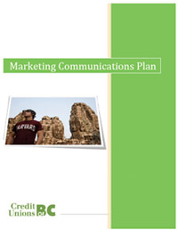

Marketing
Central One Advertising Plan
 This report was created for Central One and the Credit Unions of BC. The goal of the project was to create a comprehensive advertising plan for the client. This assignment also doubled as a contest; only one group in the class would be permitted to present their report to the CEO and Marketing Manager, and we were granted that privilege.
The goal of the project was to create awareness for the company while differentiating the services of a credit union from those of a bank. One major requirement of the project was that we had to create our advertising plan and efforts around the slogan "Be Remarkable".
Recording Industry Association of America
This report was created for a professor acting as a client. The report is based on reserach findings related to the effects of illegal downloading on the Recording Industry Association of America (RIAA). The report details standard marketing research techniques and methods including: Problem statement, objectives, secondary research, primary research, expert interviews, and of course, a conclusion.
The goal of the project was to conduct a marketing research on the problem posed to us to discover why people download music, legal implications, and the effects it has had on the RIAA. The answer was determined through extensive secondary research and primary research in the form of a survey and expert interviews.